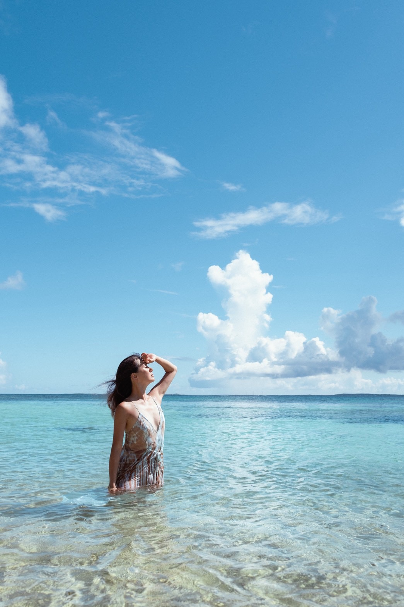
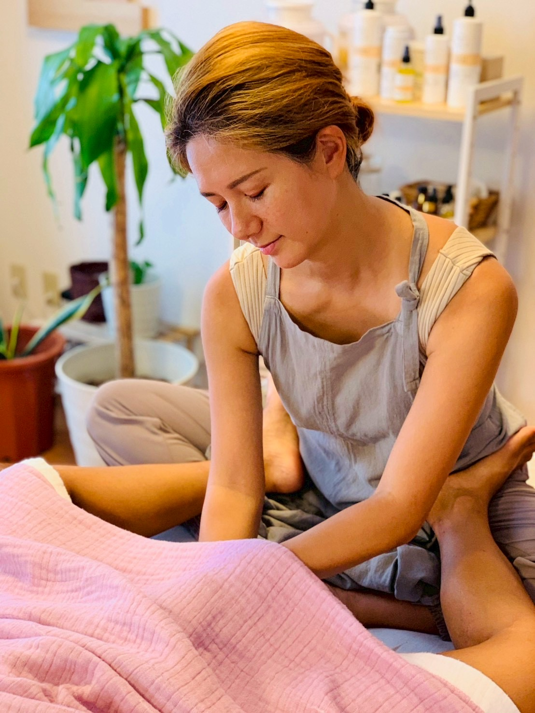
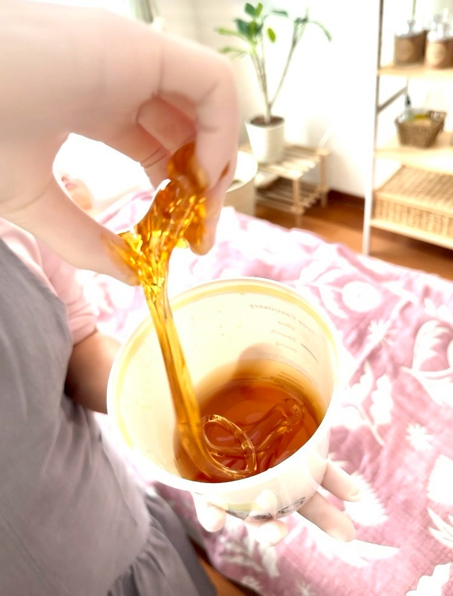
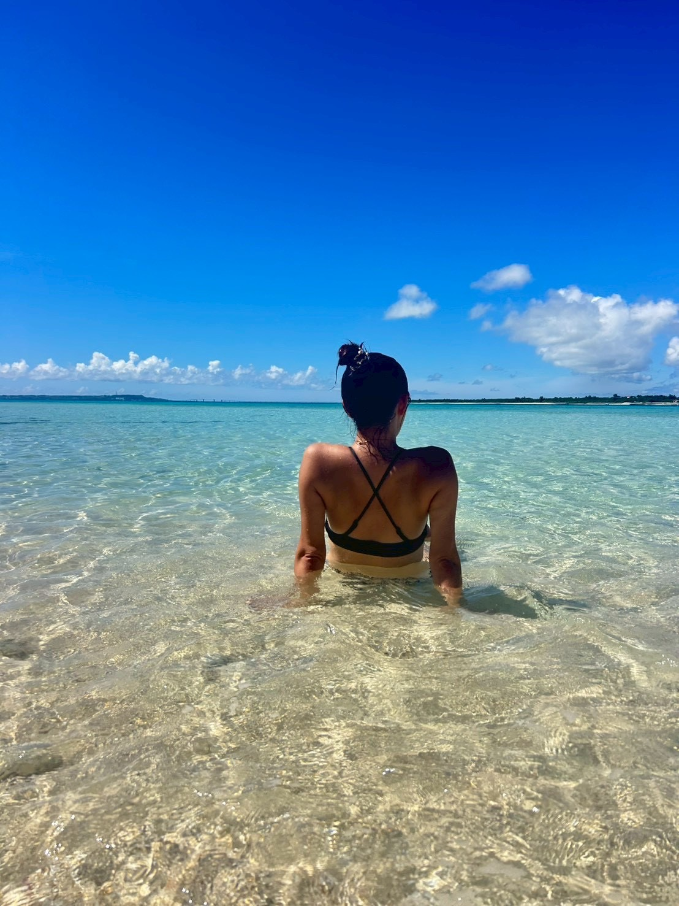
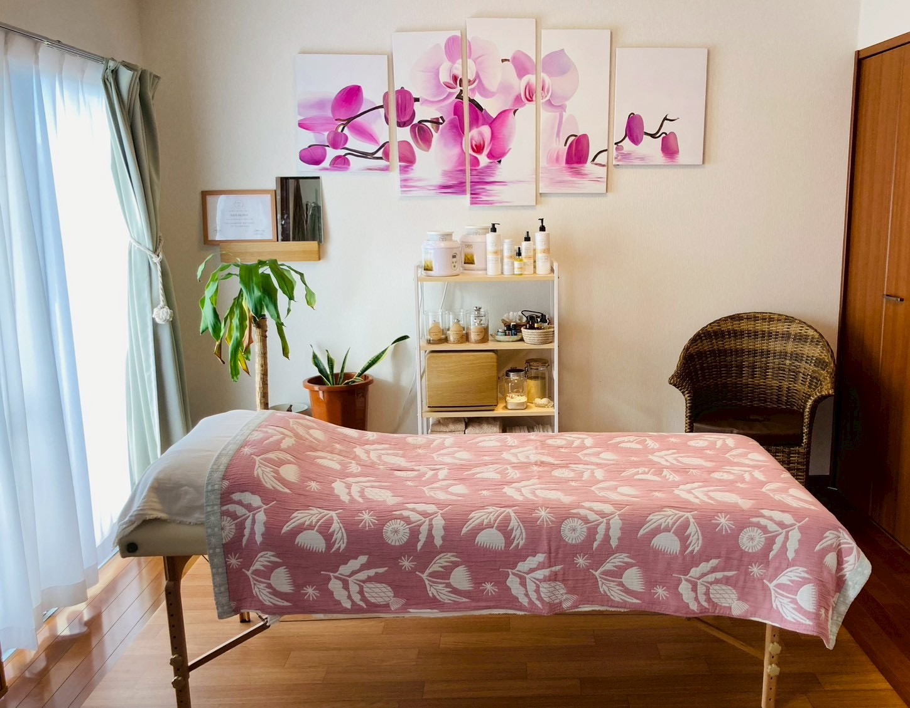
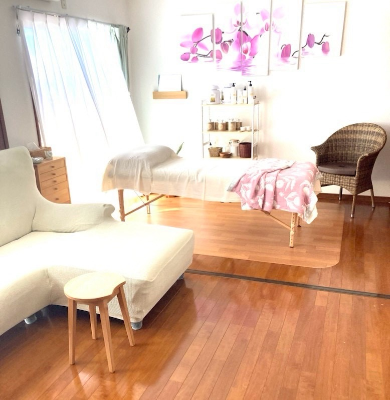

July Creative Spotlight2026年7月のクリエイティブ特集
Ran Numa沼 蘭
Wellness practitioner · LUNA SPA Miyakojima
ウェルネスプラクティショナー・宮古島 LUNA SPA
She once dreamed of living near the sea someday. Then she asked herself a simple question: why not now?
いつか海の近くに住みたい。それなら、「いつか」ではなく「いま」住めばいい。
Why My Miyakojima Chose RanMy Miyakojimaが蘭さんを選んだ理由
A Life Chosen with Intention自分らしく生きることを選ぶ
Many people quietly carry the thought, “Someday, I would like to live near the sea.” Ran once held that wish too. Then she asked herself a simple question: if that life mattered to her, why wait for someday? Guided more by intuition than certainty, she chose Miyakojima, an island whose name and location she had barely known.
Life on the island gradually changed the way she moved through the world. Gentle people, expansive nature, and an unhurried rhythm gave her room to release endurance and return to a life that felt more like her own. In that calm, she found a kind of security that money and material comfort could not provide.
That experience now lives within her work. Through LUNA SPA, Ran creates quiet, personal time for women to reconnect with their minds and bodies. Her approach to relaxation and self-care is not separate from Miyakojima; it has been shaped by the island's softness, spaciousness, and permission to simply be.
My Miyakojima chose Ran for the July Creative Spotlight because her story expands the meaning of creativity. It is not only about making something visible. It can also be the courage to listen inward, choose the present, and gently create a life that feels true. Her words, “not someday, but now,” carry the quiet strength of Miyakojima and may offer someone else the encouragement to take a first step.
「いつか海の近くに住みたい。」そんな想いを、心のどこかに抱えている人は少なくないかもしれません。蘭さんもその一人でした。けれどある日、「いつか」ではなく、「いま」住めばいいのではないか。そう思い立ち、名前も場所もまだよく知らなかった宮古島へ移り住むことを決めました。振り返ると、その選択は偶然ではなく、ご縁に導かれたものだったと感じているそうです。
宮古島での暮らしは、蘭さんの人生に大きな変化をもたらしました。穏やかな人々、美しい自然、ゆったりと流れる時間。この島だからこそ、「我慢」を手放し、「自分らしく生きる」という感覚を少しずつ取り戻すことができたと話してくださいました。雄大な自然に身を委ねる日々の中で、お金や物質的な豊かさでは得られない、心からの安心感を見つけることができたそうです。
その経験は、現在の蘭さんのお仕事にも深くつながっています。女性の心と身体に寄り添い、一人ひとりが安心して自分自身と向き合える時間を大切にすること。LUNA SPAでのリラクゼーションやセルフケアを通して、「自分らしく過ごせる毎日」をそっと支えています。その優しく穏やかな想いは、宮古島という場所だからこそ育まれたものなのかもしれません。
My Miyakojimaが蘭さんを7月のCreative Spotlightに選んだのは、その生き方が「創造すること」の意味を広げてくれるからです。創造とは、目に見える作品をつくることだけではなく、自分の内側の声に耳を澄ませ、いまを選び、自分らしい暮らしを丁寧につくっていくことでもあります。「いつか」ではなく「いま」を選んだ蘭さんの言葉には、宮古島の穏やかさと静かな強さが宿っています。その物語が、誰かの小さな一歩につながることを願い、7月のCreative Spotlightとしてご紹介します。
Her Story蘭さんの物語
“Someday” Became “Now”
A Place She Had Never Known
Ran had always carried the thought that one day she would live near the sea. Eventually, that distant idea began to sound unnecessarily far away. If it was something she truly wanted, why keep assigning it to an unknown future?
Miyakojima arrived first as intuition rather than a carefully researched plan. She did not know the island well, or even exactly where it was. Still, something about it felt right. Looking back, she sees that unexpected pull as a connection that was already waiting for her.
The Relief of Letting Go
What she loves about Miyakojima is not one landmark or view. It is the gentleness she feels in the people, the land, nature, and even the air. The island has a way of holding everything without asking it to hurry.
Living here helped her take off the habit of endurance. She stopped organizing life around what she thought she had to tolerate and began living with more room for who she actually is.
A Different Kind of Abundance
By entrusting herself to Miyakojima's wide landscapes and calm rhythm, Ran found a sense of security that money or material comfort could never fully provide. It is quieter than success and less visible than possessions, but it feels real: the ease of being able to return to herself.
蘭さんの物語Her Story
「いつか」が「いま」になった
知らなかった島へ
「いつか、海の近くに住みたい」と思っていました。でも、それなら「いつか」ではなく、「いま」住めばいいのではないか。そう思い、なんとなく心に浮かんだ宮古島へ向かいました。
名前も場所さえもよく知らなかった土地。それでもここへ来たのは、きっとご縁があって導かれたからだと蘭さんは感じています。
我慢を手放す
蘭さんが好きなのは、人も、大地も、自然も、空気も、すべてが穏やかな宮古島。すべてを包み込むような包容力と、身を委ねられる安心感があります。
島で暮らすようになり、「我慢」を脱ぎ捨て、「わたしらしさ」で生きられるようになりました。
こころからの豊かさ
雄大な自然と穏やかな空気に身を委ねる中で、お金や物質的な豊かさでは決して得られない、こころからの安心感を見つけることができたといいます。
誰かの基準ではなく、自分の感覚へ戻っていくこと。宮古島での暮らしは、蘭さんにとって本来の自分を思い出す時間になっています。

The Turning Point心が動いた瞬間
Not someday.
Now.
「いつか」ではなく、
「いま」。
LUNA SPA Miyakojima宮古島 LUNA SPA
A Place to Return to Yourself自分自身へ戻るための場所
Ran's work at LUNA SPA carries the same themes found in her own story: softness, trust, and the freedom to release what has been held for too long. The private, light-filled space feels personal rather than performative.
LUNA SPAで蘭さんが大切にしている時間には、やわらかさ、信頼、そして抱えてきたものをそっと手放す感覚があります。光の入るプライベートな空間で、自分自身へ戻るための穏やかな時間を届けています。
Current treatments, reservations, and salon updates are shared through Instagram.
最新のメニュー、ご予約、サロン情報はInstagramでご確認ください。
Visit LUNA SPA on Instagram InstagramでLUNA SPAを見る
In Her World蘭さんの世界
Sea, Care, and Quiet Light海、ケア、静かな光




Connect With Ran蘭さんとつながる